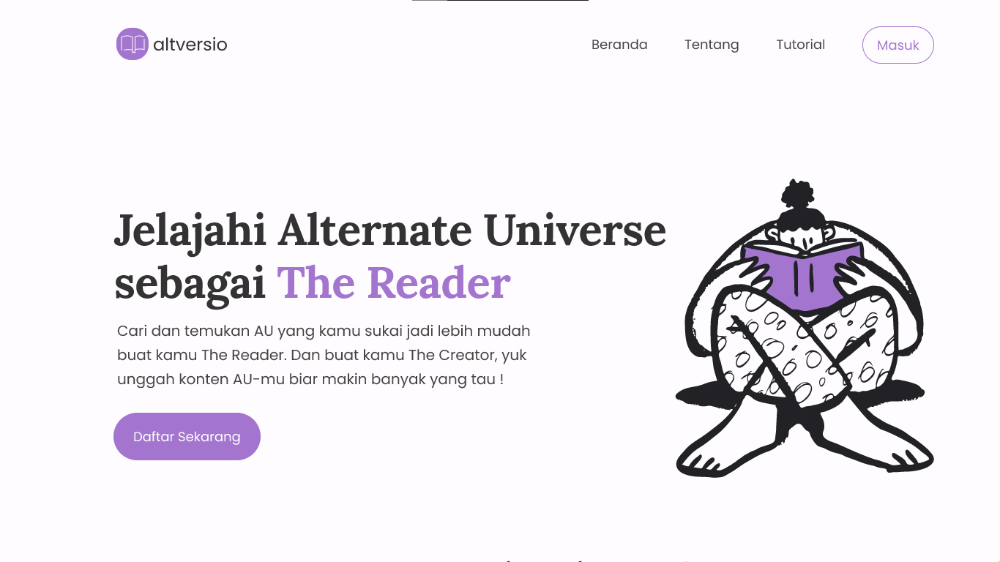
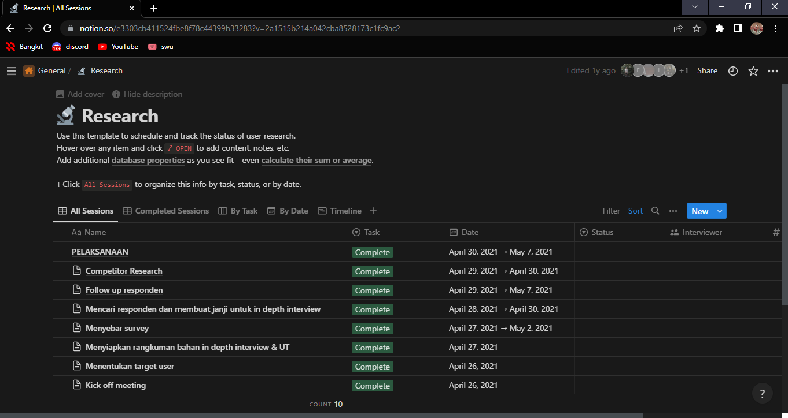
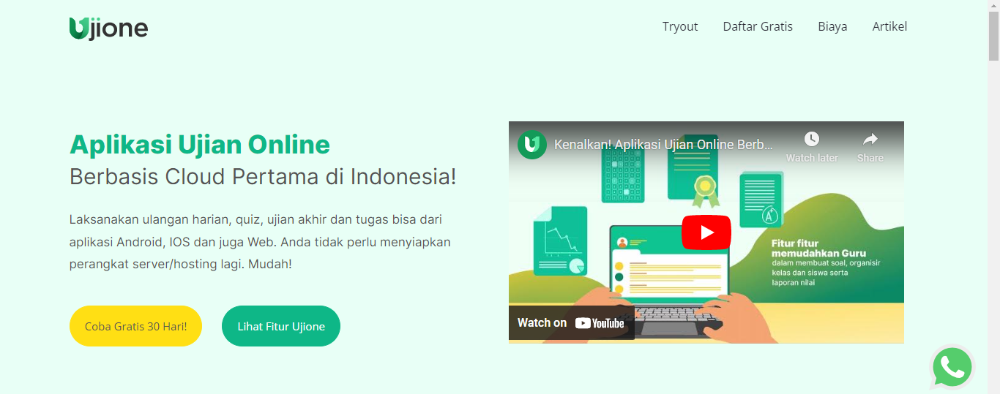

Nancy Laylana Putri, Cohort Bangkit 2023
Hello everyone!👋
Welcome to my personal web.
Here you'll get to know me personally through my journey, projects, and activities as 6th semester
student majoring Software Engineering. Currently, I have a lot of interest about cloud environtment
so I decided to join Bangkit Academy 2023 Batch 1 and choose Cloud Computing learning path.
SMAN 1 SALATIGA
2017-2020
Studied Mathematics and Natural Science. These subjects are essential for pursuing careers in
fields such as engineering, technology, research, medicine, and many others.
UNIVERSITAS GADJAH MADA
2020-2024 (expected)
Bachelor Degree in Software Engineering. The program typically covers topics such as programming
languages, software design, algorithms, data structures, database management, software testing,
and project management.
UI/UX Design of Altversio
A platform that offers people who are interested in Alternate Universe(AU), mostly from Twitter.
This project is task on course of PAD(Proyek Aplikasi Dasar).

User Interface Researcher at Kantin Digital
Digital canteen applications for managing canteens more efficiently and effectively. The methods
used in the research could include surveys, interviews, case studies, and many more to gathering datas.

Frontend Engineer for Ujione Website
Ujione website is an online learning platforms (online learning) for students. Framework used in
this project is Svelte JS.

More like story-telling part..
My first year in college, I decided to join comunity called "Komunitas Mahasiswa TIK" for one period.
It is a comunity of student in UGM to encourage self developing their interest on IT field especially
regarding preparation for IT competitions. During the period I also volunteering as Facilitator in
Gemastik XIV.
In my second year, I move to another comunity to encourage hard skill by joining Google Developer student
Clubs UGM as Hipster. It was there that I gained I got new experiences and improved my skills in UI/UX design.
And currently, I dared to get out of my comfort zone and try the opportunity to join Bangkit from Kampus Merdeka
programs. I hope this is can be my turning point for my future.